Design with the user
05 December 2013
1. Git + GitHub
Git: workflow of a file
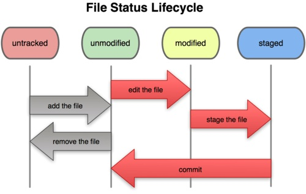Source: Chacon, S. (2009). Pro Git. Berkeley, CA; New York: Apress ; Distributed to the Book trade worldwide by Springer-Verlag. Retrieved from http://git-scm.com/book
Git: workflow
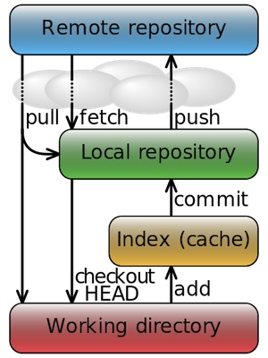Using Git locally: start
cd <directory name> #Enter into the project directory
git init #Start local repository
git status #Get status of the working directory/stage
git add <file name> #Add a file to the stage
git add . #Add all files from current directory to the stage
git add -a :/ #Add all files recursively
git add -u #Update (add) all files already being tracked
git commit -m "messagetext" #Commit changes with a message
Exercise: 01
Create a local repository, and add + commit your bio file.
Using Git locally: modifications and history
git rm <file name> #Erase a file within Git
git rm -f <file name> #Erase a file from the index from Git
git mv <file name> <wheretomove> #Move a file within Git
git log #Commit history in the command line
gitk #Commit history in a separate window
git diff-tree --no-commit-id --name-only -r <commithash> #Changed files of a commit
git ls-tree --name-only <commithash> #All files of a commit
Exercise: 02
Rename your bio file name.surname.md.
Using Git locally: quick undoing
01: git commit -m "initial commit"
02: git add <forgotten file>
git commit --amend #Replace last commit with added/removed files
git reset HEAD <file name> #Unstage a staged file
git checkout -- <file name> #Overwrite a file with last commit version
More information: http://git-scm.com/book/en/Git-Basics-Undoing-Things
Using Git remotely: Remotes
git clone <link to repository> #Clone a remote repo locally
git add remote <name> <link to repo> #Add a remote repository with a name
git remote -v #View current remotes
git remote rm <name of the remote> #Remove a remote repo
git push <name of the remote> #Push local changes to remote
git fetch <name of the remote> #Get new version from remote without merge
git pull <name of the remote> #Get+merge new version from remote
Exercise: 03
Create a repository on GitHub, and add its remote to your local repository, and push your bio.
Git: commit history
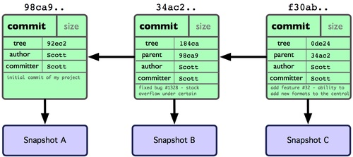Source: Chacon, S. (2009). Pro Git. Berkeley, CA; New York: Apress ; Distributed to the Book trade worldwide by Springer-Verlag. Retrieved from http://git-scm.com/book
Git: commit history
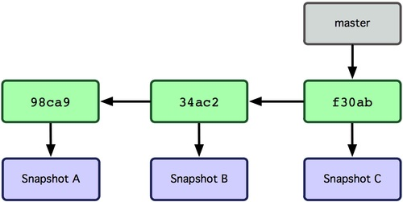Source: Chacon, S. (2009). Pro Git. Berkeley, CA; New York: Apress ; Distributed to the Book trade worldwide by Springer-Verlag. Retrieved from http://git-scm.com/book
Git: Branching
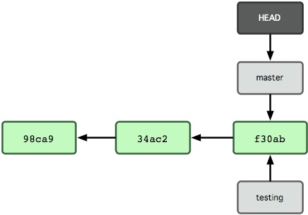Source: Chacon, S. (2009). Pro Git. Berkeley, CA; New York: Apress ; Distributed to the Book trade worldwide by Springer-Verlag. Retrieved from http://git-scm.com/book
Git: Branching
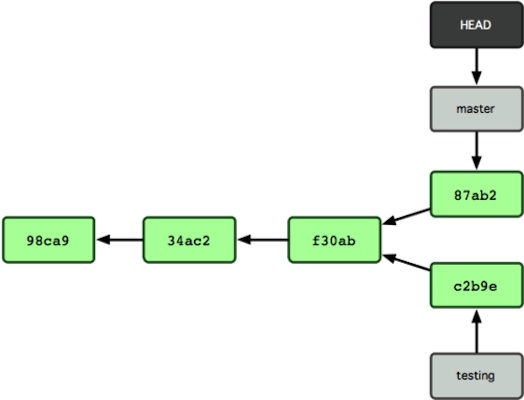Source: Chacon, S. (2009). Pro Git. Berkeley, CA; New York: Apress ; Distributed to the Book trade worldwide by Springer-Verlag. Retrieved from http://git-scm.com/book
Git: Merging
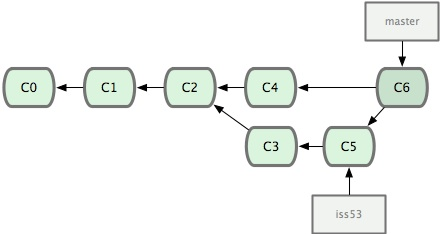Source: Chacon, S. (2009). Pro Git. Berkeley, CA; New York: Apress ; Distributed to the Book trade worldwide by Springer-Verlag. Retrieved from http://git-scm.com/book
Using Git locally: branches
git branch <name of the branch> #Create a local branch
git push <name of the remote> <name of the branch> #Push branch to remote
git checkout <name of the branch> #Switch to another branch
git checkout master #Go back to master branch
git diff <name of the branch> master #Diff branches before merging
git merge <name of the branch> #Merge the branch with current branch
git branch -d <name of the branch> #Delete a local branch
git push origin :<name of the branch> #Delete a remote branch
Using Git: Diff & Difftool
git diff #Diff w/ Index / Working Directory
git diff HEAD #Diff w/ HEAD / Working Directory
git diff <sha1> <sha2> #Diff w/ two commits
git difftool <...> #Better diff and for images
Exercise: 04
Create a branch where you will add your hobby to the bio, push it to GitHub.
Diff(tool) it with the master, merge and push to GitHub.
Using Git: Tags
git tag #List existing tags
git tag -a tagname -m 'messagetext' #Create a version tag, tagname = v1.0
git push origin tagname # Push a tag to the remote repository
Exercise: 05
Create v0.1 and push it to GitHub
Git: Checkout/Reset
git checkout <name of the branch> #Switch to another branch
git checkout master #Go back to master branch
git reset --hard <sha> #Replace working dir with a specific commit
git checkout <sha> #Go back in time at a specific commit
git branch <name of the branch> #But then create e new branch!
git checkout <sha> <filename> #Get a file from a specific commit
Exercise: 06
Get from history your first version of the bio, and push it to GitHub.
Using Git: Merge binary files
CONFLICT (content): Merge conflict in index.html
Automatic merge failed; fix conflicts and then commit the result.
git checkout --theirs <filename> #Keep their/remote file
git checkout --ours <filename> #Keep my/local file
git add <filename> #After checkout, don't forget to add
Source: http://gitready.com/advanced/2009/02/25/keep-either-file-in-merge-conflicts.html
Lunch time! Questions?
See you at 13:00
GitHub: Quota
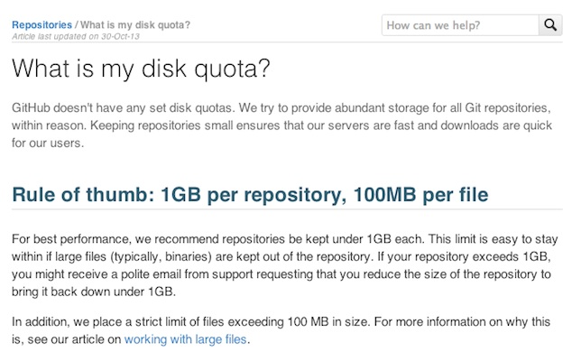Source: https://help.github.com/articles/what-is-my-disk-quota
GitHub: Image Diff
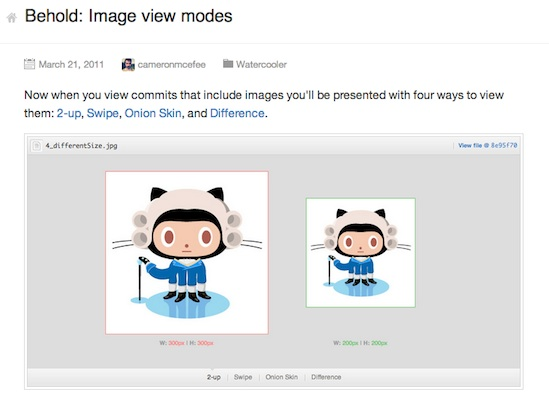GitHub: 3D Diff
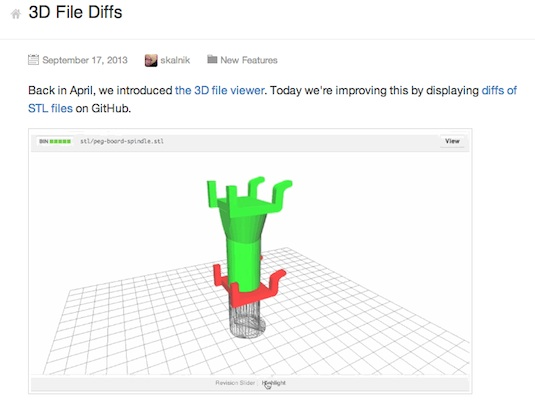Git: Centralized Workflow
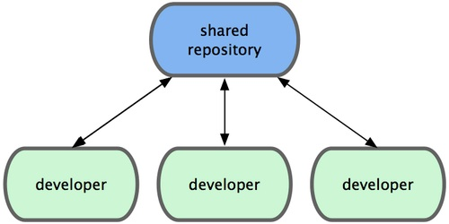Source: Chacon, S. (2009). Pro Git. Berkeley, CA; New York: Apress ; Distributed to the Book trade worldwide by Springer-Verlag. Retrieved from http://git-scm.com/book
Git: Integration Manager Workflow
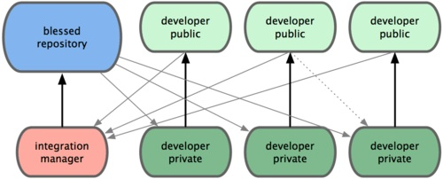Source: Chacon, S. (2009). Pro Git. Berkeley, CA; New York: Apress ; Distributed to the Book trade worldwide by Springer-Verlag. Retrieved from http://git-scm.com/book
Git: Benevolent Dictator Workflow
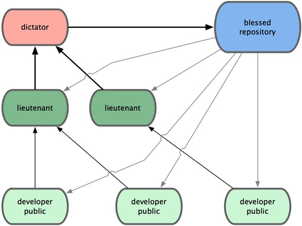Source: Chacon, S. (2009). Pro Git. Berkeley, CA; New York: Apress ; Distributed to the Book trade worldwide by Springer-Verlag. Retrieved from http://git-scm.com/book
Git: Forking Workflow
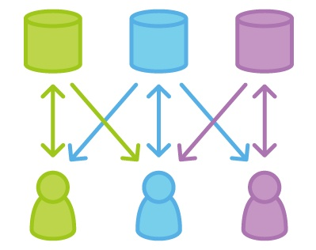Git: Gitflow Workflow
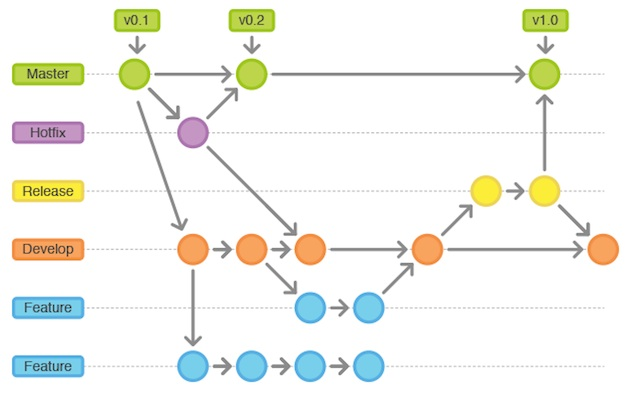Thank you!
Massimo Menichinelli / info@openp2pdesign.org / @openp2pdesign

This work is licensed under a Creative Commons Attribution 3.0 Unported License.
Massimo Menichinelli - 2013
openp2pdesign.org